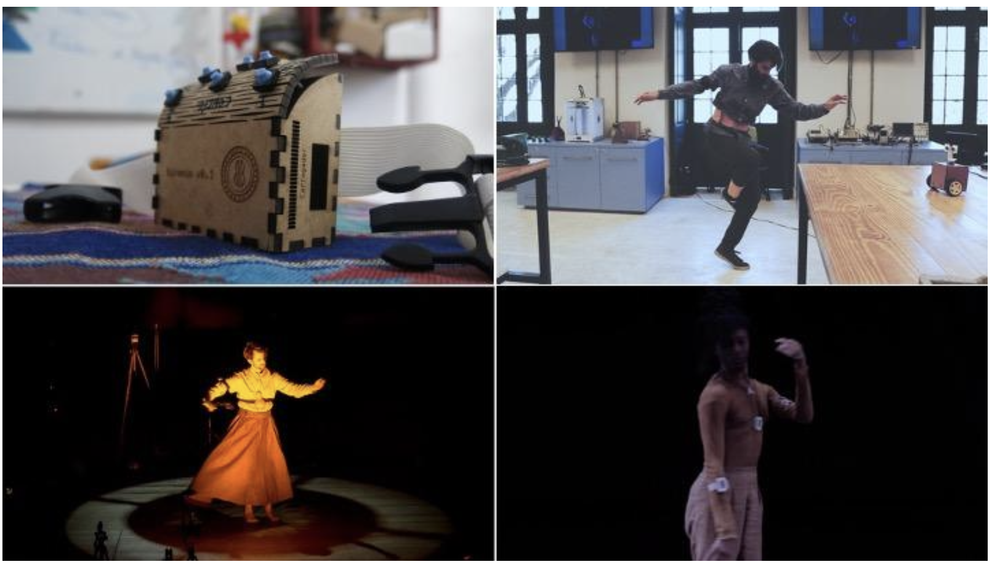
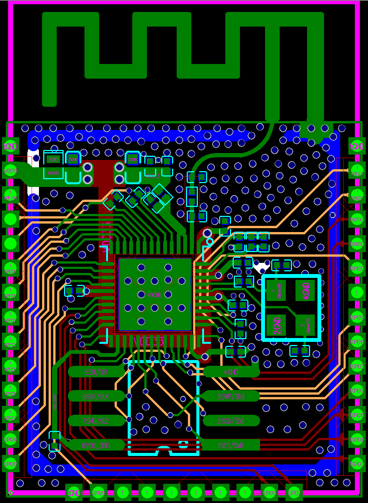
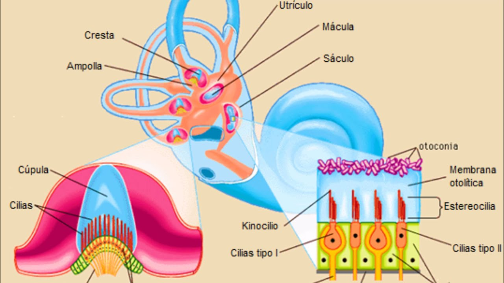
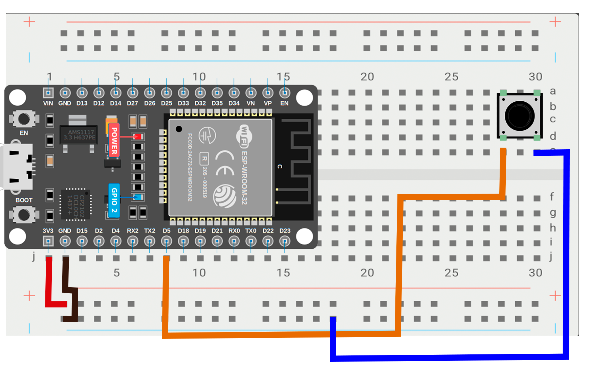
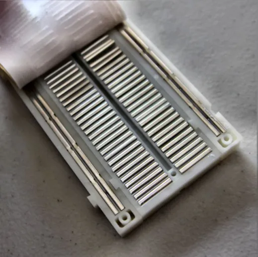

// versões do giromin

// giromin em uso
// esp32 — a placa


// mems — microscopia eletrônica de varredura

// sistema vestibular
Labirinto do ouvido interno — detecta aceleração linear e velocidade angular.
O mesmo que o MPU6050 faz em silício.
O mesmo que o MPU6050 faz em silício.

// simulação de giroscópio — glowscript.org
// ciclo 1
LED interno
→ Arduino IDE

// ciclo 2
Botão + LED


// INPUT_PULLUP
A placa puxa o pino para HIGH por padrão — apertar o botão manda LOW.
// desafio
Enquanto segura o botão: LED pisca rápido. Ao soltar: apaga.
Dica:
Dica:
delay() dentro do if.
// bônus
Inverter a lógica — LED sempre aceso, apaga ao apertar.
// ciclo 3
Sensor + Plotter

// instalar biblioteca
Tools → Manage Libraries → buscar Adafruit MPU6050 → instalar com dependências.
// exemplo pronto
File → Examples → Adafruit MPU6050 → plotter
Já imprime AccelX, AccelY, AccelZ, GyroX, GyroY, GyroZ no Serial Plotter.
// desafio
Mover o corpo de formas diferentes e identificar qual linha corresponde a qual gesto.
AccelX/Y/Z = aceleração linear · GyroX/Y/Z = velocidade de rotação